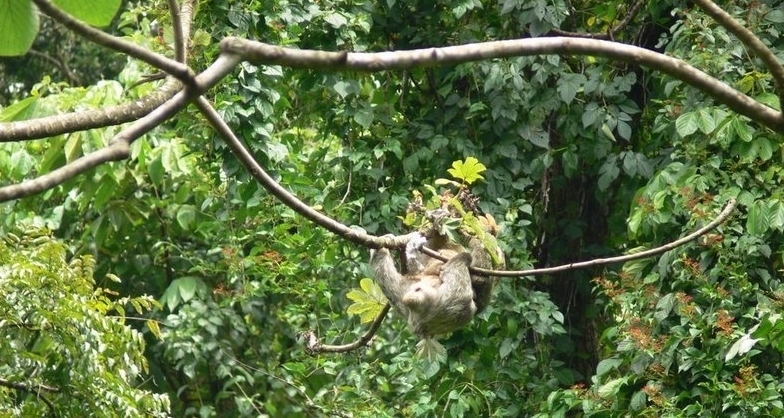
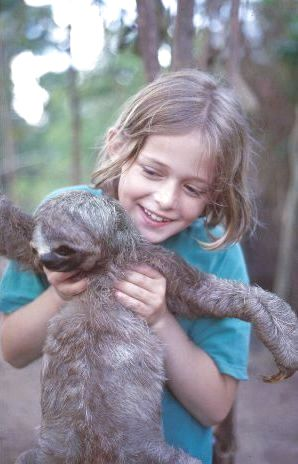
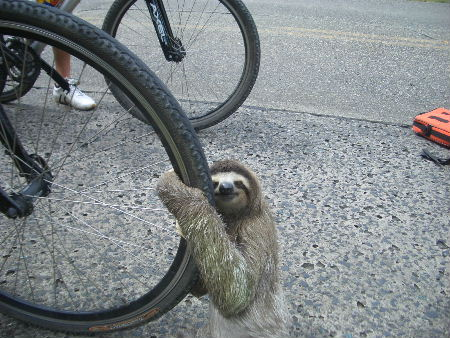

Faultiere
Ihr gesamtes Leben lang hängen Faultiere an Ästen mit dem Rücken nach unten. Die gebogenen Klauen fungieren als Haken.

Aber ab und zu macht ein Faultier auch einen Ausflug zu den Menschen:
 
Zurück zum Inhaltsverzeichnis